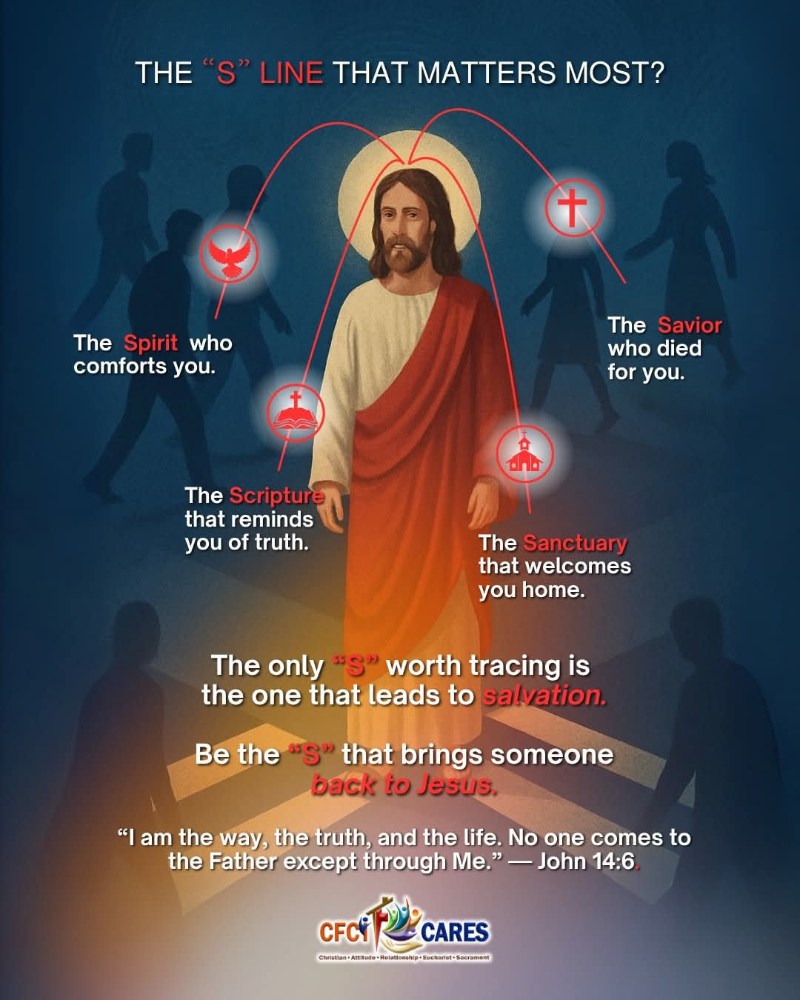

Aquila | MULTIMEDIA ARTIST
The person behind the artist: A Mother, Wife, and Student
Balancing the roles of a professional freelance graphic artist, student, wife, and a mother is the most challenging yet the most rewarding role I've ever undertaken.
Being a student is not easy specially when your attention and time are divided by different responsibilities. My gameplay is to be more focused on the goal while enjoying each lessons I am learning in life and in school.
As a graphic artist, its really good to know that I have different avenues to use to get ideas, inspiration, and reason to thrive more and to achieve more.
My personal life does not distract me; it serves as the foundation of my resilience and creative discipline.
Visual Snapshot
|  |  |
Facebook Pages I Manage
Find more of my work and content on Facebook pages I manage:
[ EDUCATION ]
[ ACCOMPLISHMENTS ]
[ BACK TO MAIN ]